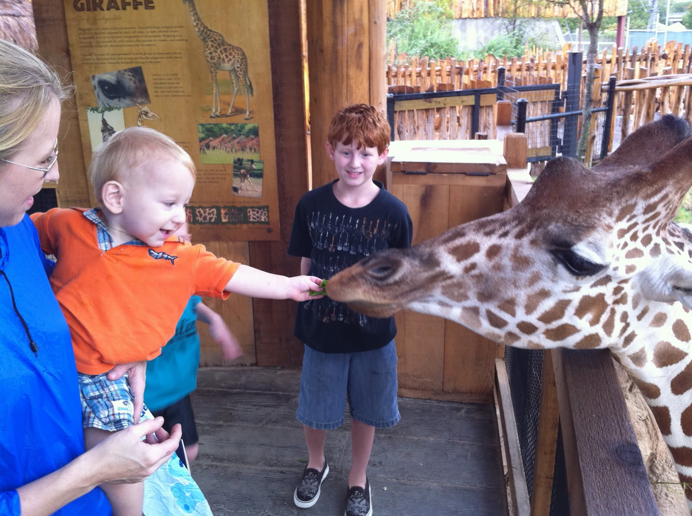
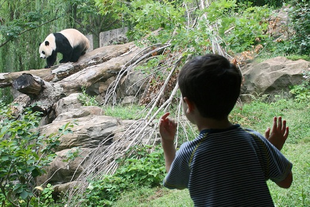
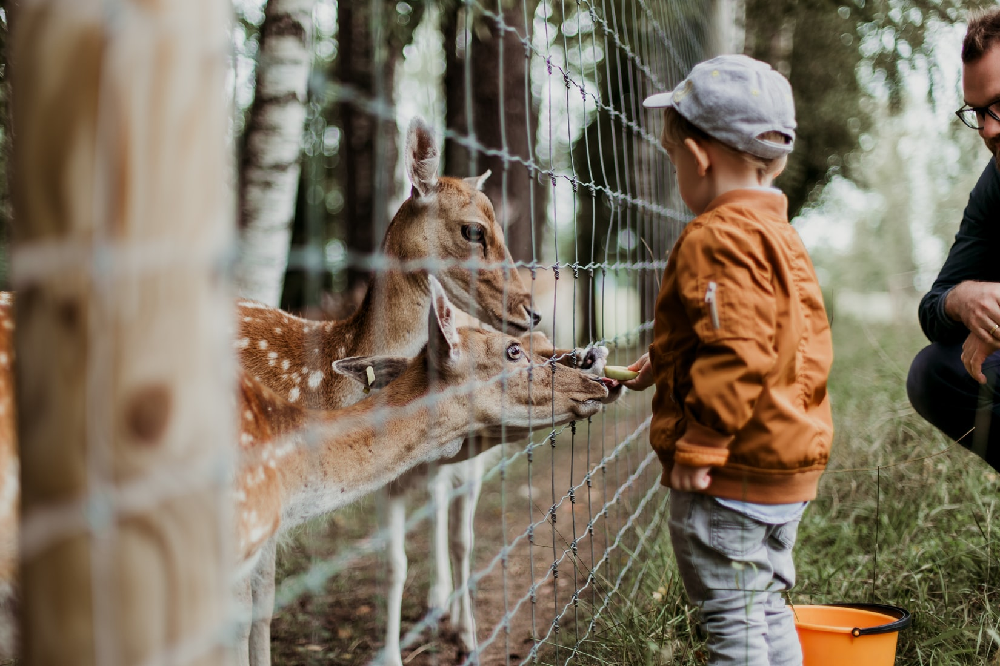

By Nishu Thapa
One of my favorite things to do as a family is to visit a zoo. I love witnessing the wonder and amazement in my boys’ eyes as they see an animal for the first (2nd and 3rd) time! Their faces light up and their smiles come alive as they point to each animal in excitement. According to the Association of Zoos and Aquariums, zoos and aquariums have over 181 million visitors each year. We have already shared the many benefits of visiting an aquarium, so now it’s time to take a closer look at zoos. Visiting a zoo offers so many incredible learning opportunities. While having a fun day exploring, kids will develop valuable skills and obtain priceless knowledge. A day at the zoo also encourages a healthy lifestyle while bringing family and friends together. It is the perfect day trip destination for any season
As children walk around the zoo, they are exposed to words and concepts. It also encourages dialogue between parents, children and even siblings. While walking around with your child, it is important to label every animal and ask questions. This will help increase their vocabulary and comprehension skills. Visiting a zoo is the perfect way to spend a day together as a family. Grandparents, parents, cousins and siblings can all find something to enjoy at the zoo. One of my fondest recent memories is visiting the Turtle Back Zoo with my mom, grandmother and two boys. It was an exciting and magical day for everyone!
Most zoos offer educational programming including camps that help children become more aware of animal behavior, care and conservation. These programs, like the ones offered at The Bergen County Zoo, offer a structured, fun and hands-on learning environment for kids and families. They often include stories, songs, crafts and activities. These multi-sensory based learning programs are perfect for instilling knowledge about animals. Most zoos cover a vast amount of land which allows for ample exercise. Space Farms Zoo, for instance, has wide open spaces including several hills which is perfect for getting the heart pumping. Many zoos also provide playground areas for children to work those gross motor skills while making new friends. My favorite zoo playground is the Prehistoric Playground at the Turtle Back Zoo.
Even if you don’t attend the educational programs, activities or special events, children will still absorb an insane amount of knowledge when visiting a zoo. They will use all of their senses to take in their surroundings and expand their understanding about animals and their environment. They will learn the way an animal smells, the sounds he makes, the way he feels and what he looks like. Zoos offer a true multi-sensory approach to learning! For many kids, and adults, the best way to learn is by doing and feeling. Many zoos offer petting and feeding areas which allow kids to truly immerse themselves in the animals lives. The Turtle Back Zoo also offers an amazing Touch Tank where visitors can touch live sharks and stingrays. It is an experience the kids will not forget!